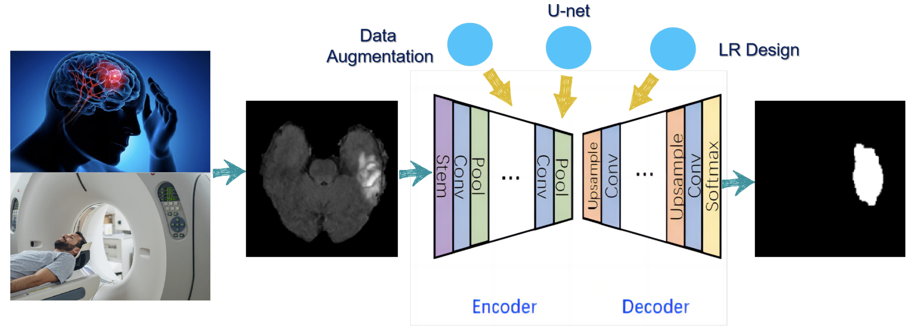

<!DOCTYPE html>
<html lang="en">
  <head>
    <meta charset="utf-8" />
    <meta name="viewport" content="width=device-width, initial-scale=1.0, maximum-scale=1.0, user-scalable=no" />

    <title>Self-Introduction</title>
    <link rel="shortcut icon" href="./favicon.ico" />
    <link rel="stylesheet" href="./dist/reset.css" />
    <link rel="stylesheet" href="./dist/reveal.css" />
    <link rel="stylesheet" href="./dist/theme/simple.css" id="theme" />
    <link rel="stylesheet" href="./css/highlight/github.css" />

    <link rel="stylesheet" href="./assets/custom.css" />

  </head>
  <body>
    <div class="reveal">
      <div class="slides"><section  data-markdown><script type="text/template">

<div class="middle center">
<div style="width: 100%">


# `Self-Introduction`

<hr>

Brief intro about my academic background and research interests

By [@黄振 Zhen Huang](https://github.com/ZhenHuangLab)

<div style="text-align: right; margin-top: 1em;">
<p>2024.3.5&emsp;&emsp;&emsp;</p>
<br>
<p>Updated on 2024.9.4&emsp;&emsp;&emsp;</p>
</div>

</div>
</div>

</script></section><section  data-markdown><script type="text/template">

## `Outline`

1. **Personal background**
2. **Selected experience (time order)**
3. **Research interests**
4. **External links**

<br>

Navigation Guide:

```markdown
N / SPACE: Next slide
P / SHIFT + SPACE: Previous slide
← / H: Left
→ / L: Right
↑ / K: Up
↓ / J: Down
F: Fullscreen
ESC / O: Overview
```

</script></section><section ><section data-markdown><script type="text/template">

<div class="middle center">
<div style="width: 100%">

# `1. Personal background`

</div>
</div>

</script></section><section data-markdown><script type="text/template">

## 1.1 Education

<!-- * Senior student at [College of Agriculture and Biotechnology](http://www.cab.zju.edu.cn/chinese/main.psp), [Zhejiang University](https://www.zju.edu.cn). (2020.09-2024.06(Expected))
* Major in Horticulture and minor in Biology.
* GPA 3.98/4.0(90.56/100), ranking 1/44.
* Visiting Undergrad Research at [Molecular Biophysics & Biochemistry, Yale University School of Medicine](https://mbb.yale.edu/). (2023.07-2023.10) -->

* Ph.D. student at [Tsinghua-Peking Center for Life Science](http://www.cls.edu.cn), School of Life Science, [Tsinghua University](https://www.tsinghua.edu.cn/). (2024.08-)
* B.S. at College of Agricultural and Biotechnology, [Zhejiang University](https://www.zju.edu.cn). (2020.09-2024.07)
* Visiting Undergrad Research at [Molecular Biophysics & Biochemistry, Yale University School of Medicine](https://mbb.yale.edu/). (2023.07-2023.10)

</script></section><section data-markdown><script type="text/template">

## 1.2 Skills

* **English**: CET-4: 620, CET-6: 586, TOEFL 103.
* **Programming languages**: Python, R, MATLAB. Studying C.
* Linux, version control (Git & Github), front-end web development (HTML, CSS).
* Signal processing, image processing, machine learning in computer vision.
* **cryo-EM computation**: IMOD, Relion(cryo-ET), cryoSPARC(SPA), Chimera, EMAN2(cryo-ET), and some plugins & scripts like Isonet, MemBrain-seg, etc.
* **Wet lab**: basic molecular biology and biochem techniques, such as PCR, WB, qPCR, DNA/RNA/Protein extraction, protein purification, etc.

</script></section><section data-markdown><script type="text/template">

## 1.3 Publications

* Liu X, Chang Y, Xu Q, Zhang W, **Huang Z**, Zhang L, Weng S, Leptihn S, Jiang Y, Yu Y, Hua X. 2023. Mutation in the two-component regulator BaeSR mediates cefiderocol resistance and enhances virulence in *Acinetobacter baumannii*. mSystems 8:e01291-22. doi:[10.1128/msystems.01291-22](https://doi.org/10.1128/msystems.01291-22)

</script></section></section><section ><section data-markdown><script type="text/template">

<div class="middle center">
<div style="width: 100%">

# `2. Selected experience`

</div>
</div>

</script></section><section data-markdown><script type="text/template">

## 2.1 Purification and Application of Plant CUL1 Antibody

I participated in the Chinese National College Students’ Life Science Competition and joined Dr. Jie Dong's lab.
* **Time**: 2021.10-2022.06
* **Background & Motivation**: 
  * Ubiquitination modification plays a significant role in the protein degradation system of organisms.
  * As the scaffold protein of the E3 ubiquitin ligase, CUL1 spatiotemporal specificity in expression and its modification in ubiquitination of substrates are closely related.
  * It's possible to study CUL1 expression by preparing and using antibodies that specifically interact with CUL1.
* **Goal**: to study CUL1 expression by preparing and using antibodies that specifically interact with CUL1;

</script></section><section data-markdown><script type="text/template">

## 2.1 Purification and Application of Plant CUL1 Antibody

* **Work & Methods**: 
  * As the leader of this project group, I briefly designed the experimental scheme and conducted the related experiments.
  * We overexpressed CUL1 in *E. coli* and purified anti-CUL1 from rabbit serum.
  * Western Blotting showed that these antibodies are highly specific and potent.
  * Finally, using these antibodies, we studied the expression of CUL1 in *Arabidopsis thaliana* under different environmental stresses.

* **Results**:
  * Successfully purified and applied the anti-CUL1 antibody;
  * The results showed a significant decrease in the content of CUL1 and the ratio of activated CUL1 under drought and nitrogen deficiency stress.

</script></section><section data-markdown><script type="text/template">

## Why I began to be interested in cryo-EM/ET?

Because of my hobby in astrophotography, I began to be interested in image processing and cryo-EM/ET. 

Astrophotography and cryo-EM have much in common: dim object (low SNR) / trace the object / images are averaged to see more details.


<div class="caption"> <a href="https://github.com/ZhenHuangLab/epsf_generator">ePSF_generator</a>: Using Python to pick the stars and generate ePSF to do deconvolution</div>

</script></section><section data-markdown><script type="text/template">

## 2.2 Methodology Optimization for Membrane Protein Analysis in cryo-ET

I joined Prof. Xing Zhang's lab in Zhejiang University School of Medicine and mentored by Dr. Yunjie Chang.

* **Time**: 2022.06-2023.06
* **Background & Motivation**: 
  * To precisely pick membrane proteins in tomograms, accurate segmentation of biological membranes and their localization is needed.
  * A complete and easy-to-use workflow is currently lacking. (including over-picking strategy based on membrane segmentation)

</script></section><section data-markdown><script type="text/template">

## 2.2 Methodology Optimization for Membrane Protein Analysis in cryo-ET

* **Methods & Work**:
  1. I collaborated with others, mainly handling data processing and cryo-ET membrane modeling, to observe the relationship between the pathogenicity of a pathogen, the morphology of its cell membrane and the number of its flagella.
  2. I optimized existing membrane protein localization strategies:
       * improved the training speed of *EMAN2* segmentation;
       * refined the segmentation results using the skeletonize algorithm for better membrane segmentation;
       * wrote the [*tbl2star*](https://github.com/ZhenHuangLab/tbl2star) and [*imod2relion*](https://github.com/ZhenHuangLab/imod2relion) scripts for membrane protein localization using normal vectors after membrane segmentation.

</script></section><section data-markdown><script type="text/template">

## 2.2 Methodology Optimization for Membrane Protein Analysis in cryo-ET

* **Results**:
    1. Co-authored a [paper](https://doi.org/10.1128/msystems.01291-22);

<div align="center"><p>the pathogenicity <--> the number of flagella and the morphology of membranes</p></div>

<div display="block" align="center"></img></div>

<div class="caption">Representative cryo-ET images and their corresponding membrane models. Figure from the paper.</div>

</script></section><section data-markdown><script type="text/template">

## 2.2 Methodology Optimization for Membrane Protein Analysis in cryo-ET

* **Results**:
    2. Improve segmentation method in EMAN2 based on CNN;

<div display="block" align="center"></img></div>

<div class="caption">1288s vs 250s : reduce training time and get better results</div>

</script></section><section data-markdown><script type="text/template">

## 2.2 Methodology Optimization for Membrane Protein Analysis in cryo-ET

* **Results**:
    3. Better membrane segmentation using skeletonization + overpick membrane proteins: optimized and integrated the existing membrane protein localization strategies;

<div display="block" align="center"></img></div>

<div class="caption">Skeletonization + overpick membrane proteins using normal vectors</div>

</script></section><section data-markdown><script type="text/template">

## 2.2 Methodology Optimization for Membrane Protein Analysis in cryo-ET

* **Results**:
    3. Better membrane segmentation using skeletonization + overpick membrane proteins: optimized and integrated the existing membrane protein localization strategies;

<div display="block" align="center"></img></div>

<div class="caption">Writing some scripts and tutorials for my lab: <a href="https://github.com/ZhenHuangLab/tbl2star">tbl2star</a>, <a href="https://github.com/ZhenHuangLab/imod2relion">imod2relion</a></div>

</script></section><section data-markdown><script type="text/template">

## 2.2 Methodology Optimization for Membrane Protein Analysis in cryo-ET

* **Results**:
    4. Better membrane segmentation pipeline for visualization using Isonet and MemBrain.

<div display="block" align="center"></img></div>

</script></section><section data-markdown><script type="text/template">

## 2.2 Methodology Optimization for Membrane Protein Analysis in cryo-ET

* **Results**:
    4. Better membrane segmentation pipeline for visualization using Isonet and MemBrain.

<div display="block" align="center"></img></div>

</script></section><section data-markdown><script type="text/template">

## 2.3 Best CV project: Brain Tumor Segmentation Based on U-net

I attended Imperial College London 2023 Winter School and served as the leader of Group 2 in the final Computer Vision project.

* **Time**: 2023.01-2023.02
* **Methods & Work**:
  * I did most of the code work and gave the presentation. (Slides [here](https://zhenhuang.site/wp-content/uploads/2023/10/group2_cv.pdf))
  * Based on the general U-net structure, We added some data augmentation methods, and improved the loss function(adding MSE penalty term) and learning rate (using warm-up and cosine annealing scheme).

<div display="block" align="center"></img></div>

</script></section><section data-markdown><script type="text/template">

## 2.3 Best CV project: Brain Tumor Segmentation Based on U-net

* **Results**:
  * develop the best-performing deep learning model in the brain tumor segmentation task, whose accuracy reached 93%;
  * Our group won the Best CV project award in the final presentation.

<div display="block" align="center"></img></div>

</script></section><section data-markdown><script type="text/template">

## 2.4 MemXTerminator: High-resolution Structure Analysis of Membrane Proteins *in situ*

I joined Dr. Jack(Kai) Zhang's lab at Yale University School of Medicine.

* **Time**: 2023.07-2023.10
* **Background & Motivation**:
  * The traditional cryo-EM method obtains high-resolution structures of membrane proteins from detergent-purified samples.
  * A technical bottleneck: the intense membrane signal in the native membrane environment severely interferes with alignment, negatively impacting the acquisition of high-resolution in situ protein structures.

</script></section><section data-markdown><script type="text/template">

## 2.4 MemXTerminator: High-resolution Structure Analysis of Membrane Proteins *in situ*

> Topic: Depress/Remove the membrane signal in micrographs </br>--> Make the protein signal stand out  </br>--> Alignment and averaging would be more accurate  </br>--> Getting the high-res structure *in situ* would be much easier

<div display="block" align="center"></img></div>

</script></section><section data-markdown><script type="text/template">

## 2.4 MemXTerminator: High-resolution Structure Analysis of Membrane Proteins *in situ*

* **Methods & Work**:
  * I tried various image processing and analytical methods to remove membrane signals:
    * Used the Radon transform to fit simple shapes of membranes signal;
    * Used Genetic Algorithm combined with Bézier curves to fit membranes of any shapes;
    * After obtaining the mathematical model of the membrane, the membrane signal can be removed.
  * I developed a software called *MemXTerminator*, which can remove membrane signals using 2D averages and alignment information.
    * Python, CUDA & GPU acceleration, cryoSPARC, GUI(PyQt5).
    * Code [](https://github.com/MemXTerminator) and [wiki](https://memxterminator.github.io/wiki/) are available on Github.

</script></section><section data-markdown><script type="text/template">

## 2.4 MemXTerminator: High-resolution Structure Analysis of Membrane Proteins *in situ*

* **Results**:
  1. Successfully remove the membrane signal in particles/micrographs.

<div display="block" align="center"></img></div>

<div class="caption">Big picture of this software</div>

</script></section><section data-markdown><script type="text/template">

## 2.4 MemXTerminator: High-resolution Structure Analysis of Membrane Proteins *in situ*

* **Results**:
  2. Using SPA, Directly obtained the high-resolution structure of the Vesicular Stomatitis Virus G protein in its native membrane environment, which was challenging to achieve using SPA before. (We're going to compile these findings into a paper for publication.)

<div display="block" align="center"></img></div>

</script></section></section><section ><section data-markdown><script type="text/template">

<div class="middle center">
<div style="width: 100%">

# `3. Research interests`

</div>
</div>

</script></section><section data-markdown><script type="text/template">

## 3.1 Computational side: cryo-EM/ET method development

* **Key words**: image/signal processing, machine learning, software development.
* **General questions**:
  * How to improve data collection efficiency?
  * How to integrate data processing workflows to make software more efficient and user-friendly?
  * How to develop new algorithms in conjunction with fields like machine learning to locate and analyze more challenging molecules of interest (such as membrane proteins)?

</script></section><section data-markdown><script type="text/template">

## 3.1 Computational side: cryo-EM/ET method development

For example, how to integrate machine learning to automate the picking and classification of membrane proteins in tomograms?

* **Challenges**:
  * Although cryo-ET has enabled the study of in situ membrane protein structures in cells, improving resolution remains challenging due to low data density and processing difficulties.
  * Current software pipelines, such as *MemBrain*, require extensive manual annotations on membrane proteins.

</script></section><section data-markdown><script type="text/template">

## 3.1 Computational side: cryo-EM/ET method development

* **Research ideas**:
  * Utilize my previous work on optimizing membrane segmentation and overpicking membrane protein strategies;
  * Along with machine learning and other methods, to automatically search for and classify various types of membrane proteins in an unsupervised manner based on membrane segmentation input.
* **Expected results**:
  * A more efficient and user-friendly software pipeline for membrane protein localization and classification in cryo-ET;
  * Greatly simplify the data processing difficulty in studying membrane proteins with cryo-ET, enhance data processing efficiency, and possibly achieve high-resolution cryo-ET structures of membrane proteins *in situ*;
  * Help study the dynamic changes of membrane protein structures in their native environment.

</script></section><section data-markdown><script type="text/template">

## 3.2 Bio side: Combining cryo-EM/ET with other biophysics and biochemistry techniques to solve biological problems

* Analyzing protein dynamics and interaction mechanisms *in situ*; explaining the molecular mechanisms of diseases/ontogeny/evolution on the cellular, sub-cellular and molecular levels.
* I am quite open and want to find out the specific problems that most interest me in the Ph.D. .

</script></section><section data-markdown><script type="text/template">

## 3.2 Bio side: Combining cryo-EM/ET with other biophysics and biochemistry techniques to solve biological problems

For example, about membrane proteins:

* **Background**:
  * About one-third of human proteins are associated with membranes, playing vital roles in eukaryotes, prokaryotes, and even viruses, and are targets for many drugs;
  * TRPV channels: a family of transient receptor potential cation channels and are activated by various physical and chemical stimuli, such as temperature.
* **Challenges**:
  * The precise molecular dynamics and structural changes associated with channel activation, modulation by cellular signals, and interaction with various ligands remain to be fully understood.

</script></section><section data-markdown><script type="text/template">

## 3.2 Bio side: Combining cryo-EM/ET with other biophysics and biochemistry techniques to solve biological problems

For example, about membrane proteins:

* **Questions like**:
  * How do physical and chemical stimuli translate into conformational changes that open or close the channel?
* **Research ideas**:
  * Use cryo-EM/ET to study the structure and dynamics of TRPV channels in their native membrane environment;
  * Combine with other biophysics and biochemistry techniques to study the molecular mechanisms of TRPV channels in response to various stimuli and ligands;
  * Possibly develop new drugs targeting TRPV channels.

</script></section></section><section ><section data-markdown><script type="text/template">

<div class="middle center">
<div style="width: 100%">

# `4. External links`

</div>
</div>

</script></section><section data-markdown><script type="text/template">

## External links

* <div><b>Homepage</b>: <a href="https://zhenhuang.site"></a></div>
* <div><b>GitHub</b>: <a href="https://github.com/ZhenHuangLab"></a></div>
* <div><b>WebSlides</b>: <a href="https://webslides.zhenhuang.site"></a></div>
* <div><b>Kirastar深空摄影笔记</b>: <a href="https://kirastar.zhenhuang.site"></a></div>
* <div><b>Bilibili</b>: <a href="https://space.bilibili.com/37168500"></a></div>
* [**CV**](https://zhenhuang.site/_astro/CV-zhenhuang.CreQVYvQ.pdf)
* **Email**: [zhen.victor.huang@gmail.com](mailto:zhen.victor.huang@gmail.com), [zhenhuang@zju.edu.cn](mailto:zhenhuang@zju.edu.cn)

</script></section></section><section  data-markdown><script type="text/template">

<div class="middle center">
<div style="width: 100%">

# `Thank you for your attention!`

</div>
</div>
</script></section></div>
    </div>

    <script src="./dist/reveal.js"></script>

    <script src="./plugin/markdown/markdown.js"></script>
    <script src="./plugin/highlight/highlight.js"></script>
    <script src="./plugin/zoom/zoom.js"></script>
    <script src="./plugin/notes/notes.js"></script>
    <script src="./plugin/math/math.js"></script>
    <script>
      function extend() {
        var target = {};
        for (var i = 0; i < arguments.length; i++) {
          var source = arguments[i];
          for (var key in source) {
            if (source.hasOwnProperty(key)) {
              target[key] = source[key];
            }
          }
        }
        return target;
      }

      // default options to init reveal.js
      var defaultOptions = {
        controls: true,
        progress: true,
        history: true,
        center: true,
        transition: 'default', // none/fade/slide/convex/concave/zoom
        slideNumber: true,
        plugins: [
          RevealMarkdown,
          RevealHighlight,
          RevealZoom,
          RevealNotes,
          RevealMath
        ]
      };

      // options from URL query string
      var queryOptions = Reveal().getQueryHash() || {};

      var options = extend(defaultOptions, {"transition":"slide","transitionSpeed":"fast","center":false,"slideNumber":"c/t","width":1000,"history":true,"progress":true,"controls":true}, queryOptions);
    </script>


    <script>
      Reveal.initialize(options);
    </script>
  </body>
</html>
